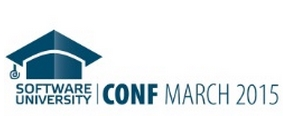

Публикувано от: Petya Grozdarska

Предстои третото издание на техническата конференция за млади програмисти
Предстои третото издание на техническата конференция за млади програмисти
Кандидатирайте се до 18 февруари
Кандидатстването е отворено до 24 март